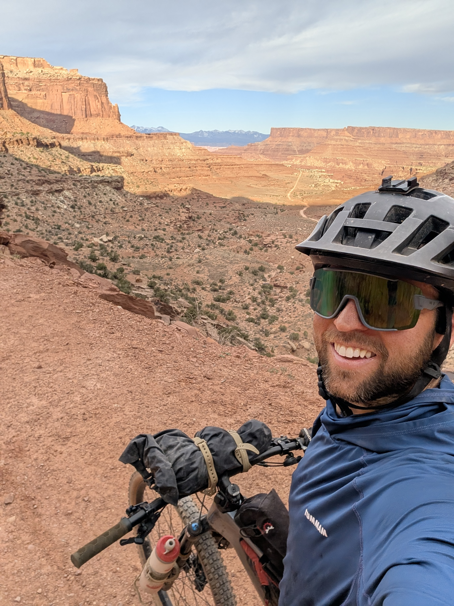

Internal Medicine · Hospitalist
Louis-Bassett
Porter,
MD
Internal Medicine Physician
My name is Louis-Bassett Porter — everyone calls me Dash, because of the hyphen. I am a board-certified internal medicine physician working as a hospitalist in Grand Junction, Colorado.
My clinical work centers on the management of complex hospitalized patients at St. Mary's Medical Center, a Level II Trauma Center, alongside per diem roles across the Western Slope.
When I am not at the bedside, I am outside — climbing, cycling, and exploring the remarkable landscape that drew me to Colorado in the first place.

